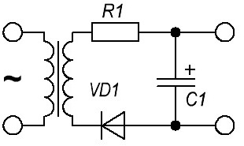
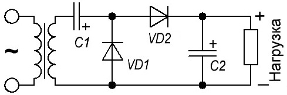
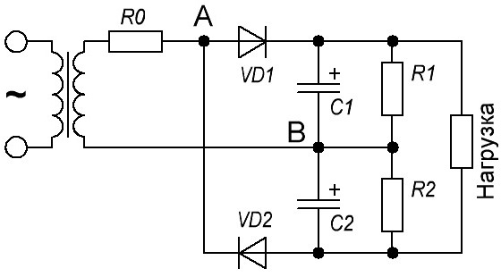
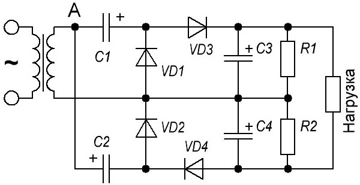

Умножитель напряжения
Умножитель напряжения будет проще понять, если начать с обычного однополупериодного выпрямителя. В этом выпрямителе напряжение на выходе больше действующего значения переменного напряжения на входе (выходе вторичной обмотки трансформатора) в 1,414 раза.

Рис. 1 - Схема однополупериодного выпрямителя
Выходное напряжение, как правило, уменьшается с ростом тока нагрузки. Для объяснения этого факта лучше всего воспользоваться понятием "постоянной времени", которое описывает скорость заряда и разряда конденсатора C. Постоянная времени заряда невелика, так как конденсатор заряжается в цепи, в которой ток течёт последовательно через вторичную обмотку трансформатора, резистор R1 и диод VD1. (Резистор R1 установлен для ограничения импульсного тока через диод. Общее сопротивление всех перечисленных элементов мало: сопротивление резистора не более 100 Ом, а диод в момент заряда конденсатора пропускает прямой ток, ибо включен в прямом направлении. Разряд конденсатора осуществляется через нагрузку. Её общее сопротивление в сотни раз выше сопротивления зарядной цепи конденсатора. С уменьшением сопротивления разрядной цепи увеличивается ток разряда конденсатора и, соответственно, уменьшается выходное напряжение выпрямителя.
Описанный выше конденсаторный накопитель энергии используется в выпрямителях с умножением напряжения для увеличения выходного напряжения. Чем больше таких накопителей энергии конденсаторного типа используется в умножителях, тем в большее число раз выходное напряжение умножителя выше выходного амплитудного напряжения вторичной обмотки трансформатора.
Однополупериодный удвоитель напряжения
Удвоитель напряжения означает, что напряжение на его выходе в два раза выше чем на выходе обычного выпрямителя. Удвоители, также как и обычные выпрямители, бывают двух типов: однополупериодные и двухполупериодные.
На рис. 2 представлена схема однополупериодного удвоителя с положительным напряжением на выходе.

Рис. 2 - Схема однополупериодного удвоителя напряжения
Однополупериодным умножителям напряжения присущи те же недостатки, что и аналогичным выпрямителям. Можно увидеть, что частота заряда конденсатора C1 равна частоте входного напряжения. Т.е. он заряжается один раз за период. Между этими циклами зарядки идёт цикл разрядки такой же длительности. Поэтому в этой схеме необходимо серьёзно отнестись к сглаживанию пульсаций.
Двухполупериодный удвоитель напряжения
Но более распространён двухполупериодный удвоитель напряжения (рис. 3). Эта схема может быть подключена к сети переменного напряжения напрямую, минуя трансформатор. Это если требуется напряжение, вдвое превышающее сетевое и не требуется гальваническая развязка с сетью. В этом случае серьёзно повышаются требования к соблюдению техники безопасности!

Рис. 3 - Схема двухполупериодного удвоителя напряжения
Резистор R0 установлен для ограничения импульсов тока в диодах. Его значение сопротивления невелико и, как правило не превышает сотен ом. Резисторы R1 и R2 необязательны. Они установлены параллельно конденсаторам C1 и C2 для того, чтобы обеспечить разряд конденсаторов после отключения от сети и от нагрузки. Также, они обеспечивают выравнивание напряжения на C1 и C2.
Работа удвоителя очень похожа на работу обычного двухполупериодного выпрямителя. Разница в том, что здесь выпрямитель в каждом из полупериодов нагружен на свой конденсатор и заряжает его до амплитудного значения переменного напряжения. Удвоенное выходное напряжение получается путём сложения напряжения на конденсаторах.
В тот момент, когда напряжение в точке "А" относительно точки "B" положительно, через диод D1 заряжается конденсатор C1. Его напряжение практически равно амплитуде переменного напряжения вторичной обмотки конденсатора. В следующий полупериод напряжение в точке "А" отрицательно по отношению к точке "B". В этом момент ток идёт через диод D2 и заряжает конденсатор C2 до такого же амплитудного значения. Так как конденсаторы соединены последовательно по отношению к нагрузке, то мы получаем сумму напряжений на этих конденсаторах, т.е. удвоенное напряжение.
Конденсаторы C1 и C2 желательно должны иметь одинаковую ёмкость. Напряжение этих электролитических конденсаторов должно превышать амплитудное значение переменного напряжения. Также должны быть равны и номиналы резисторов R1 и R2.
Умножитель напряжения на четыре
Это устройство выдаёт на выходе напряжение, в 4 (почти) раза превышающее амплитудное напряжение на входе.

Рис. 5 - Схема умножителя напряжения на 4
Данный умножитель (рис. 5) составлен из двух однополупериодных удвоителей напряжения путём их соединения между собой выводами, противоположными по полярности. Для начала объяснения работы схемы установим, что при включении входное напряжение в точке А имеет отрицательную полярность. Конденсатор С1 при этом через диод VD1 заряжается до амплитудного значения переменного напряжения. Следующий полупериод - напряжение меняет свою полярность и в точке А будет положительный потенциал по отношению к другому выводу вторичной обмотки трансформатора. Здесь произойдёт два момента. Конденсатор С3 будет заряжаться от вторичной обмотки через диод VD3 и конденсатор С1. При этом он зарядится соответственно двойным напряжением, т.к. С1 последовательно соединён с обмоткой трансформатора. Второй момент - откроется диод VD2 и через него до амплитудного значения напряжения вторичной обмотки зарядится конденсатор С2. Следующая отрицательная полуволна будет заряжать С4 от вторичной обмотки через открытый в этот момент диод VD4 и конденсатор С2. Напряжение на выводах С4, также как и на С3, составит двойное значение входного амплитудного. Всё, с этого момента схема "насытилась" и далее будут чередоваться, если можно так выразиться, два двойных момента.
В полупериод, когда открыт диод VD3, напряжение конденсатора С1 складывается с напряжением с трансформатора и заряжает С3 до удвоенного напряжения. И тогда же открытый диод VD2 заряжает С2. Когда полярность меняется, через диод VD4 до двойного напряжения (С2 и обмотка трансформатора) заряжается C4 и тогда же через диод VD1 заряжается конденсатор С1.
Выходное напряжение всего устройства равно сумме напряжений конденсаторов С3 и C4, каждый из которых заряжен до удвоенного амплитудного значения переменного напряжения вторичной обмотки трансформатора. (Резисторы R1 и R2 имеют сопротивление десятки килоом и в основном служат для разряда конденсаторов после отключения нагрузки от работающего умножителя.
Такое устройство часто встречается в высоковольтных бестрансформаторных блоках питания ламповых радиопередатчиков. В них умножается непосредственно напряжение электросети.
Источники
katod-anod.ru - Умножитель напряжения
katod-anod.ru - Удвоитель напряжения